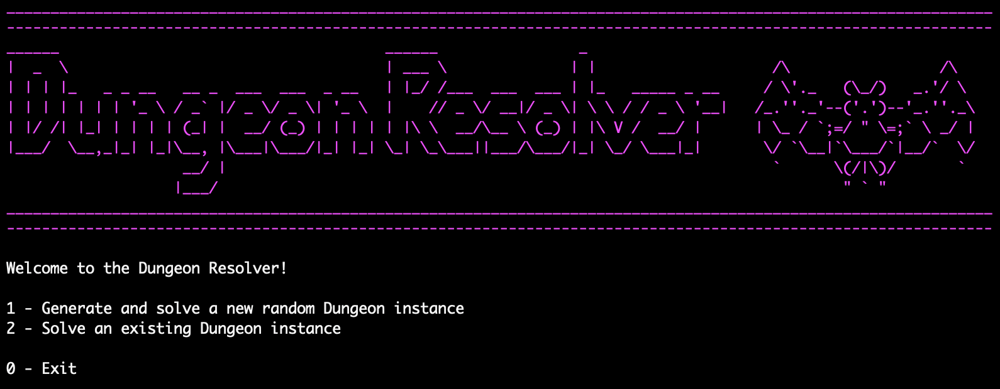
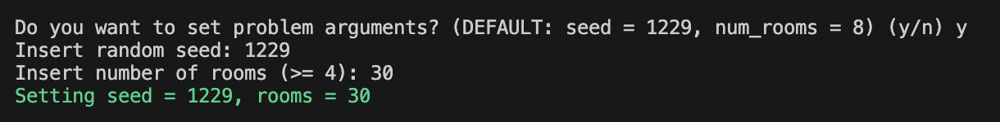
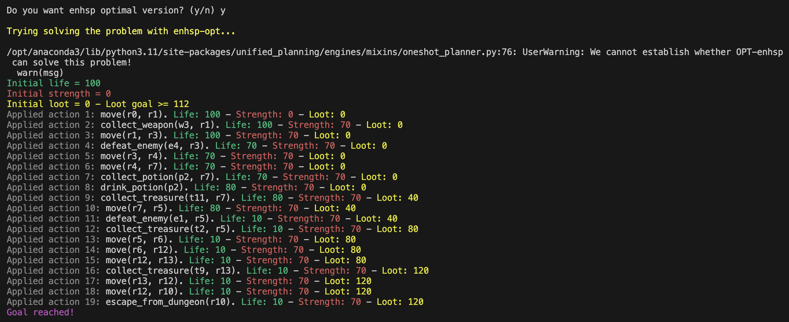
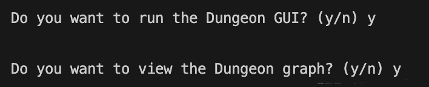
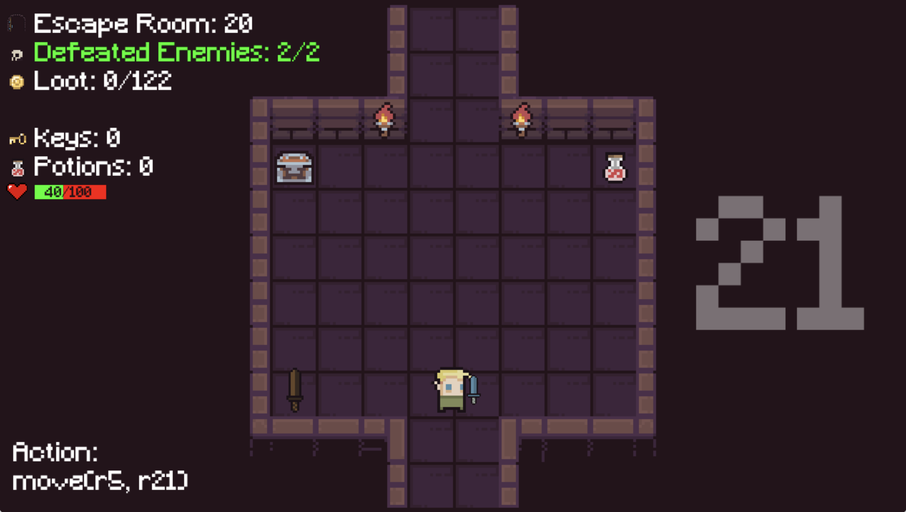
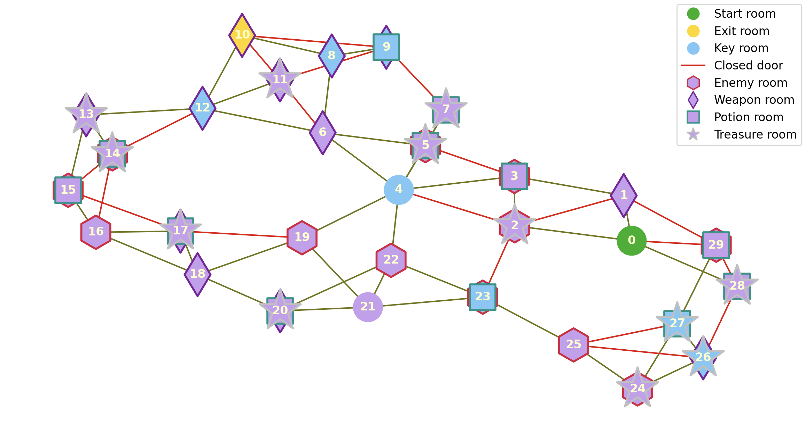
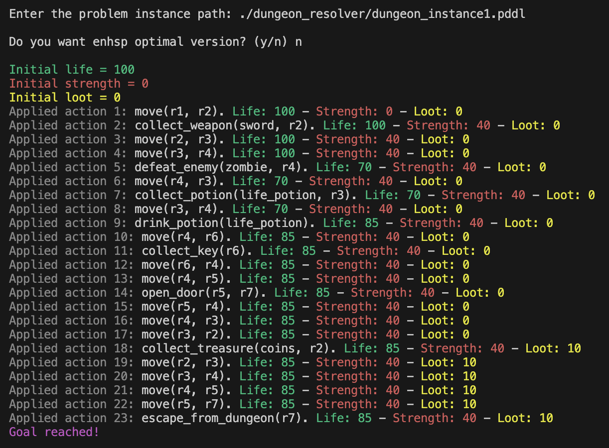

Quickstart
This guide shows the usage of Dungeon Resolver.
Main Menu

1 - Generate and solve a new random Dungeon instance
Initially it’s possible to choose whether to set the problem arguments or use the default parameters:

Then it’s possible to choose whether to run the optimal version of unified-planning planner, that will solve the problem and print the result:

Finally it’s possible to choose whether to run the dungeon GUI and view the abstract graphical representation of the dungeon:



2 - Solve an existing Dungeon
It’s also possibile to read an already existing pddl dungeon instance file, specifying its path, and to call the unified-planning function to solve the problem, printing the result (in this case the GUI is not available):
